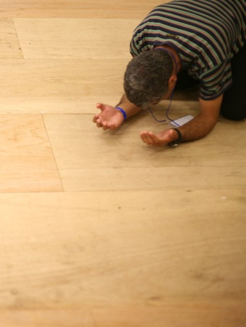

사랑하는 동역자님께 주님의 평안을 전합니다.
유월절 (Passover)
이스라엘의 군사 작전명은 간혹 정치적인 이해를 떠나 제게는 하나의 메시지가 되곤 했습니다. 이번 이란과의 전쟁에서는 'Roaring Lion’(포효하는 사자)이 그것인데, 유월절의 시작일이기도 한 오늘(4월 1일) 이것을 함께 묵상해 보았습니다.
애굽의 왕은 국가적 소유와 노예로 여겼던 이스라엘이 모세와 함께 떠나려 하자 군사를 동원해 ‘울부짖는 사자’처럼 그들을 진멸하려 했지만, 정작 멸망당한 것은 자신의 왕국이었고 왕권을 물려받을 장자였습니다. 그리고 구원은 오직 어린 양의 피를 바른 이스라엘에게 임하였습니다. 3500년 전 바로 오늘의 이야기입니다.
그로부터 1500년이 지난(2천년 전) 오늘, 성전 뜰에서 유월절 어린 양을 잡는 그 시각 십자가 위의 예수께서 “다 이루었다”(요 19:30)하시며 마지막 숨을 거두셨는데, 요한은 그분을 “보라 세상 죄를 지고 가는 하나님의 어린 양이로다”(요 1:29)라고 고백하였습니다.
죽음을 자신의 권세로 사용하던 사단의 머리는 그날 성경의 예언대로 깨어져 버렸고(창 3:15), 여전히 왕의 행세를 하며 ‘우는 사자’처럼 주님의 교회를 위협하지만(벧전 5:8), 그는 이미 예수의 십자가 대속으로 머리가 깨어진 간교한 뱀일 뿐입니다.
"유다의 사자(Lion of Judah)이신 예수께서 하늘로부터 포효하며 왕으로 강림하시는 그날, 감히 하늘을 올려다보지도 못한 채 심판의 두려움 속에 마지막 왕의 행세를 이어가던 사단과 어둠의 모든 권세들은 영원한 불못에(계 20:10) 던져지게 될 것입니다."
영국 소식
얼마 전 이슬람의 라마단 기간 중 런던 웨스트민스터 사원의 정원을 무슬림들이 점거해 기도회를 가졌고, 바로 옆 국회의사당의 웨스트민스터 홀에서는 무슬림 의원들이 총리를 초대해 기도회를, 트라팔가 광장에서는 런던시장도 참여한 3천명 규모의 무슬림 기도회가 열리기도 했습니다.
웨스트민스터 사원은 지난 천년간 ‘하나님의 권위 아래 왕권을 위임’하는 대관식이 열렸던 곳이고, 웨스트민스터 홀은 동일한 천년의 역사에서 ‘정의는 하나님으로부터 온다’는 선언으로 사법과 입법 기능이 실행된 곳이었고, 트라팔가 광장 역시 국가적 정체성(하나님의 통치)과 전쟁의 승리를 기념하는 곳이기도 한데, 그 장소들에서 ‘알라 외에 다른 신은 없다’ 외치는 아잔(Adhan)이 마치 그곳이 모스크인 양 울려 퍼졌다는 것입니다.
잠시 당혹스럽기는 했지만 덕분에 더 부여잡게 된 말씀은, 갈멜산에서 바알과 아세라 선지자들이 다 모여 온종일 하늘을 향해 부르짖었어도 정작 하나님의 불은 선지자 엘리야의 간구를 통해 임했다는 것입니다. 또한 소돔과 고모라가 어떻게 타락했고 도대체 그 수가 얼마인지보다 더 중요한 현실은 그곳에 하나님을 전심으로 경외하는 의인 열 명이 있었느냐 였습니다.
분명한 것은, 어느 지역과 나라를 불문하고 기도하는 한 사람과 공동체가 더욱 소중한 이때입니다. 전쟁의 여파도 한동안 이어지겠지만, “너희와 항상 함께 있으리라”(마 28:20) 말씀하신 약속을 신실하게 지키시는 주님을 더욱 놀랍게 경험하시는 한 해가 될 것입니다.
연합 예배 / 집회
아래는 함께 연합하고 준비하며 섬기는 예배/집회입니다.
런던 이스라엘 컨퍼런스
강사: 김종철 감독 (Brad TV)
장소: 런던 목양교회
72 Hours Worship & Prayer
장소: 독일 헤른후트
Komenský Conference House
Celebration for the Nations
| 열방부흥축제
장소: 영국 웨일즈
Selwyn Samuel Centre

기도 제목
United Kingdom
영국이 기독교 국가로서의 정체성을 온전히 회복할 수 있도록 기도해 주세요.
"엘리야가 모든 백성에게 가까이 나아가 이르되, 너희가 어느 때까지 둘 사이에서 머뭇머뭇하려느냐. 여호와가 만일 하나님이면 그를 따르고 바알이 만일 하나님이면 그를 따를지니라" (왕상 18:21)House of prayer London
성벽 위에 세워진 파수꾼의 부르심을 잊지 않도록, 기쁨으로 감당하도록 기도해 주세요.
“예루살렘이여 내가 너의 성벽 위에 파수꾼을 세우고 그들로 하여금 주야로 계속 잠잠하지 않게 하였느니라. 너희 여호와로 기억하시게 하는 자들아 너희는 쉬지 말며 또 여호와께서 예루살렘을 세워 세상에서 찬송을 받게 하시기까지 그로 쉬지 못하시게 하라” (사 62:6,7)믿음의 섬김과 동역, 그리고 사랑에 깊이 감사드립니다.
2026. 04. London Sutton
이훈종, 김선영 선교사 드림